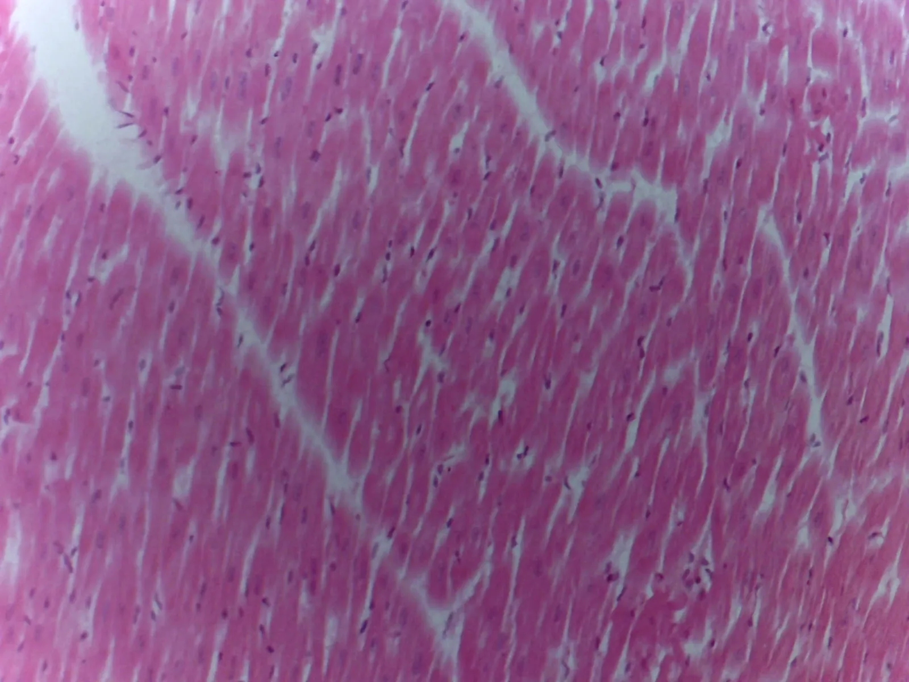

Lâmina 24 · Tecido muscular
Músculo estriado cardíaco (corte sagital)

Toque na imagem para ampliar. No computador, use as setas do teclado para trocar de imagem.
Lâmina 24 · Tecido muscular

Toque na imagem para ampliar. No computador, use as setas do teclado para trocar de imagem.